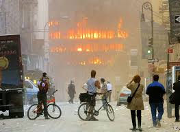
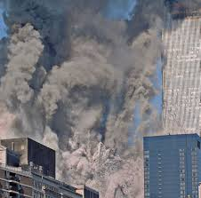
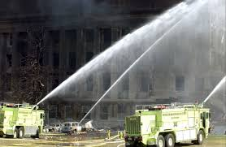

The September 11 Attacks: A Day That Changed the World
Introduction
On September 11, 2001, the United States faced one of the darkest days in its history. A series of coordinated terrorist attacks carried out by the extremist group al-Qaeda targeted key symbols of American power. Nearly 3,000 people lost their lives, and thousands more were injured. The tragic events of that day not only shook the United States but also changed global politics, security systems, and how the world viewed terrorism forever.
The Morning of the Attacks
At 8:46 a.m. (Eastern Time), American Airlines Flight 11 crashed into the North Tower of the World Trade Center in New York City. Many people initially believed it to be a terrible accident. However, just 17 minutes later, at 9:03 a.m., United Airlines Flight 175 struck the South Tower, confirming that the United States was under attack.
As shown below, the first image can depict the moment the first plane hit the North Tower — a symbol of confusion and disbelief that quickly turned into global shock.
The Collapse of the Twin Towers
At 9:59 a.m., the South Tower collapsed after burning for less than an hour. The North Tower followed at 10:28 a.m. The collapses sent massive clouds of smoke and debris through Lower Manhattan, destroying nearby buildings and covering the city in ash.
As shown below, photographs of the collapsing towers capture the unimaginable destruction and the bravery of first responders rushing into danger.
The Pentagon and Flight 93
While the world’s eyes were fixed on New York, another plane — American Airlines Flight 77 — crashed into the Pentagon at 9:37 a.m., killing 125 people inside the building and all 64 on board. A fourth hijacked plane, United Airlines Flight 93, was headed for Washington, D.C., but passengers fought back against the hijackers. The plane crashed into a field near Shanksville, Pennsylvania, at 10:03 a.m., preventing another large-scale disaster.
As shown below, an image of the Pentagon’s damaged side or the Flight 93 crash site can provide visual understanding of the widespread impact beyond New York.
Conclusion
The attacks of September 11, 2001, reshaped the 21st century. It was a day of horror, but also of courage, unity, and determination. People around the world remember where they were when the news broke. The legacy of 9/11 continues to influence politics, security, and the way societies approach peace and global cooperation.